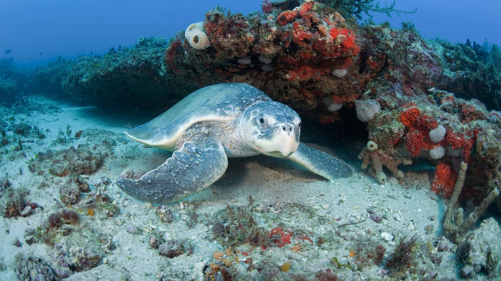

Statut: En danger critique d'extinction Population: Environ 1000 dans le monde Habitat: Océan Atlantique, le long de la côte Est des États-Unis Prédateur: L'Homme et les oiseuax et les crabes (pour les bébés) Régime alimentaire: Omnivore
La tortue de Kemp, scientifiquement connue sous le nom de Lepidochelys kempii, est une espèce gravement menacée d'extinction. C'est la plus petite des tortues marines, mesurant entre 60 et 90 cm de long et pesant environ 45 kg. Originaire principalement du golfe du Mexique, elle est également observée le long de la côte est des États-Unis. L'une des principales menaces pour cette tortue est la capture accidentelle dans les engins de pêche, notamment les filets maillants et les chaluts. Ces captures non intentionnelles, appelées prises accessoires, sont souvent fatales. La destruction des habitats de nidification due au développement côtier représente également une menace considérable. Les plages où elles pondent leurs œufs sont de plus en plus touchées par l'urbanisation, l'érosion et le tourisme. La pollution des océans, y compris les déchets plastiques et les hydrocarbures, pose un risque sérieux. Les tortues confondent souvent les sacs plastiques avec des méduses, leur proie naturelle. Le réchauffement climatique affecte aussi ces tortues de plusieurs façons, en modifiant par exemple la température des sables de nidification, ce qui influence le sexe des nouveau-nés, et en causant la montée du niveau des mers, menaçant ainsi les plages de nidification. Divers efforts de conservation sont en place pour sauver cette espèce, notamment la protection des plages de nidification, l'instauration de zones de non-pêche et l'utilisation de dispositifs d'exclusion des tortues (DET) dans les chaluts de pêche. Ces initiatives sont cruciales pour assurer la survie de cette espèce emblématique. Protégée par la loi dans de nombreux pays, la tortue de Kemp symbolise la lutte pour préserver la biodiversité marine. La collaboration internationale et l'engagement local sont essentiels pour inverser le déclin de cette espèce et garantir un avenir où elle puisse prospérer.
Petit quizz: Combien de temps peut vivre une tortue de Kemp ?